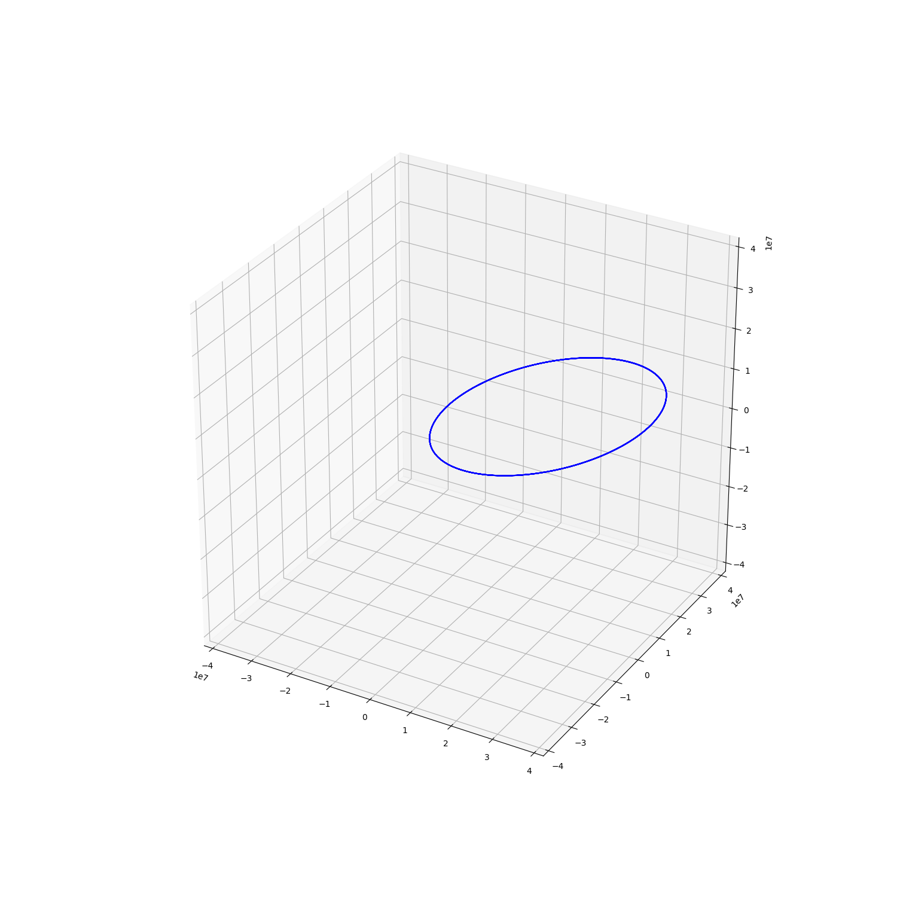

Note
Click here to download the full example code
Orekit propagator usage¶

Out:
Orekit instance @ 8727935580406:
-------------------------
Integrator : DormandPrince853
Minimum step : 0.001 s
Maximum step : 120.0 s
Position Tolerance : 10.0 m
Input frame : Orekit-ITRF
Output frame : Orekit-EME
Gravity model : HolmesFeatherstone
- Harmonic expansion order (10, 10)
Atmosphere model : DTM2000
Solar model : Marshall
Constants : WGS84
Included forces:
- earth gravity
- perturbation Moon
- perturbation Sun
Third body perturbations:
- Moon
- Sun
import numpy as np
import matplotlib.pyplot as plt
from mpl_toolkits.mplot3d import Axes3D
from sorts.propagator import Orekit
orekit_data = '/home/danielk/IRF/IRF_GITLAB/orekit_build/orekit-data-master.zip'
prop = Orekit(
orekit_data = orekit_data,
settings=dict(
in_frame='Orekit-ITRF',
out_frame='Orekit-EME',
drag_force = False,
radiation_pressure = False,
)
)
print(prop)
state0 = np.array([-7100297.113,-3897715.442,18568433.707,86.771,-3407.231,2961.571])
t = np.linspace(0,3600*24.0*2,num=5000)
mjd0 = 53005
states = prop.propagate(t, state0, mjd0, A=1.0, C_R = 1.0, C_D = 1.0)
fig = plt.figure(figsize=(15,15))
ax = fig.add_subplot(111, projection='3d')
ax.plot(states[0,:], states[1,:], states[2,:],"-b")
max_range = np.linalg.norm(state0[0:3])*2
ax.set_xlim(-max_range, max_range)
ax.set_ylim(-max_range, max_range)
ax.set_zlim(-max_range, max_range)
plt.show()
Total running time of the script: ( 0 minutes 0.957 seconds)